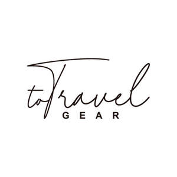

Trade Mark Journal No.2025/024 13 June 2025
UK00004195822 28 April 2025 (9,18,21,25,35)

- Class 9
- Swimming goggles; Sports glasses; Eyewear; Ski goggles; Spectacles; Sunglasses; Polarizing spectacles; Night vision goggles; Eyewear pouches; Eyeglass frames; Selfie sticks used as smartphone accessories; Plug connectors; Plug adaptors; Earbuds; Protective cases for laptops; Holders for cell phones; Protective covers for tablet computers; Diving goggles; Protective cases for cell phones; Cell phone straps.
- Class 18
- Drawstring bags; Tote bags; Cosmetic bags sold empty; Backpacks; Luggage, bags, wallets and other carriers; Luggage tags; Belt bags and hip bags; Inserts for luggage in the form of compression cubes; Credit card holders; Duffel bags; Pouches; Toiletry bags sold empty; Bags for travel; Handbags; Beach bags; Waist bags; Luggage straps; Fitted protective covers for luggage; Umbrellas and parasols; Luggage trunks.
- Class 21
- Beverageware; Flasks; Glasses, drinking vessels and barware; Tableware, cookware and containers; Wine glasses; Bottle openers; Cups and mugs; Shot glasses; Insulating sleeve holder for beverage cups; Bottles, sold empty; Figurines of porcelain, ceramic, earthenware, terra-cotta or glass; Glass stoppers; Champagne flutes; Stained glass figurines; Vacuum mugs; Paper plates; Cocktail stirrers; Napkin rings; Drinking straws; Pill boxes for personal use.
- Class 25
- Footwear; Headwear; Hats; Robes; T-shirts; Pajamas; Socks and stockings; Bras; Swimsuits; Underwear; Beanies; Money belts [clothing]; Water-resistant clothing; Sun visors; Sunsuits; Sweatbands; Swim caps; Shower caps; Ponchos; Disposable underwear.
- Class 35
- Commercial or industrial management assistance; Administration of the business affairs of retail stores; Provision of an online marketplace for buyers and sellers of goods and services; Advertising, marketing and promotion services; Retail services in relation to headgear; Retail services in relation to footwear; Retail services in relation to bags; Retail services in relation to stationery supplies; Retail services in relation to umbrellas; Retail services in relation to fashion accessories; Retail services in relation to cups and glasses; Retail services relating to clothing; Retail services relating to home textiles; The bringing together, for the benefit of others, of a variety of telecommunications services, enabling consumers to conveniently compare and purchase those services; Pay per click advertising; Sales promotion; Online advertising on a computer network; Demonstration of goods; Commercial administration of the licensing of the goods and services of others; Presentation of goods on communications media, for retail purposes.
Enze Cao
Representative: IBE Avocat - Isabelle Bertaux